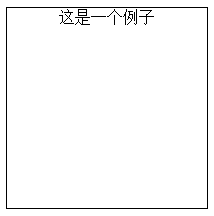
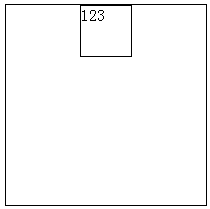
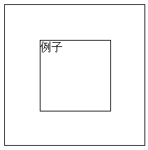
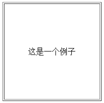
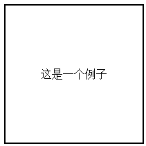
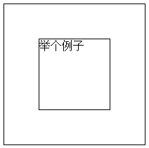

在HTML的标准盒模型中，居中是一个很常见的问题，不同标签的居中有不同的处理方式，在不同的浏览器中也会有不同的表现，今天就来归纳一下最常遇到的水平居中问题和水平垂直居中问题的处理方式。
一、水平居中
1.使块级标签中的内容居中（包括文字、图片、行内元素）
(1) 方法
text-align: center;
解读：众所周知，这个属性的本意就是让标签内部文本水平居中，除此之外，其它像img、span、button等行内元素也适用，各浏览器也都兼容，可以说是一个人畜无害的方法。
(2) 实例
.div1 { |
(3) 效果

(4) 适用性
用于使块级标签的内容（包括文字、图片、行内标签）水平居中，但有一点需要注意：加了text-align: center;的元素其后代元素的文本都会居中。完美兼容各大浏览器，无论高低版本的IE均兼容。
2.使块级标签居中
(1) 方法
margin: 0 auto;
解读：这个方法的原理是让标签上下边距为0，左右边距自适应，它无论对于块级元素还是行内元素都适用。要注意的是内层标签的宽度应不同于外层标签的宽度，否则二者重叠就看不出居中效果了。
(2) 实例
.outer { |
(3) 效果

(4) 适用性
用于使块级标签水平居中。完美兼容各大浏览器，≥IE6。
3.总结
应用以上两种方法就可以处理大部分的水平居中问题了。这两种方法不要求父标签必须固定高宽，它会自动适应父标签的高宽变化，所以处理起来比较简单。
二、水平垂直居中
1.固定高宽div的水平垂直居中
(1) 方法
a. 设置要居中的子标签绝对定位，其父标签相对定位；
b. 综合父标签和子标签的宽高，设置left、top、margin-left、margin-top属性，使其水平垂直居中。
解读：也可以设置子标签position: relative;，这样父标签则保持普通流即可。但如果子标签设置position: absolute;，那么由于绝对定位需要参考最近的定位标签，所以父标签必须设置position: relative;。
(2) 实例
.outer { |
(3) 效果

(4) 适用性
用于在父标签固定宽高的情况下使子标签（无论块级元素还是行内元素都可以，因为这里设置了absolute定位）水平垂直居中。完美兼容各大浏览器，无论高低版本的IE均兼容。
2.不固定宽高div的水平垂直居中——方法1（ghost）
(1) 方法
(a) 设置一个ghost元素（可以是:before伪元素也可以是其它没有内容的空元素）的
content: '';且display: inline-block;且vertical-align: middle;。(b) 把需要水平垂直居中的元素设置为
display: inline-block;且vertical-align: middle;。
解读：这种巧妙的方法是利用ghost元素（空元素）进行辅助垂直，为此就需要保证ghost元素与子元素是行内元素，这样才能既让二者置于同一行，又可以设置ghost的高度，最后再利用vertical-align进行辅助垂直。
(2) 实例
.outer { |
(3) 效果（下面第二张图是给ghost元素和子元素加边框之后的效果，方便理解原理）
(4) 适用性
用于标签的垂直居中。子元素可以是块级元素也可以是行内元素，但无论如何ghost元素和子元素都必须是行内元素（若子元素是块级元素则应设display为inline-block，若子元素是行内元素则可以不设其display），因为这样才能设置ghost元素的高度，同时又能把二者放在同一行内。该方法完美兼容各大浏览器，＞IE6。
3.不固定宽高div的水平垂直居中——方法2（table）
(1) 方法
创建一个table，在其中的td元素内设置
text-align:center;和vertical-align: center;。
解读：这个方法利用了table元素的便利，真正意义上地只用最原始的属性来进行居中操作。也可以用div代替table，把display设为table和table-cell。
(2) 实例（table原版和div版本）
/* table原版 */ |
/* div版 */ |
(3) 效果（上图table下图div）

(4) 适用性
是个好方法，但也有局限性。该方法完美兼容各大浏览器，＞IE6。
4.不固定宽高div的水平垂直居中——方法3（CSS3-translate()）
(1) 方法
此方法与1中固定宽高的方法相似，都是先利用position设置父子标签的定位，再让父子元素的中心相互对准，最后再回移。不同的是这个方法中使用了CSS3的
translate方法，使得回移的距离不再是基于子元素的固定宽高，而是基于子元素宽高的百分比。
解读：1和4这两种方法用到了position，通过修改position值和设置top、left等属性就能把它应用在“整页弹出层”的应用场景中。
(2) 实例
.outer { |
(3) 效果

(4) 适用性
是一种比较完美的方法，但浏览器必须支持CSS3才行。该方法完美兼容各大浏览器，＞IE8。
5.不固定宽高div的水平垂直居中——方法4（flex方法）
(1) 方法
display: flex; |
解读：这种方法运用了flex弹性布局，让父元素变成一个flex-box就可以很方便地对子元素进行水平垂直居中了。
(2) 实例
.outer { |
(3) 效果
(4) 适用性
弹性布局是2009年提出的一种新的布局方式，不兼容老版本浏览器，但目前在各大新版本的主流浏览器中已经兼容，＞IE9。
6.不固定宽高div的水平垂直居中——方法5（margin:auto）
(1) 方法
此方法与1和4中的方法相似。不同的是这个方法是在定位后使用
top:0;bottom:0;left:0;right:0;+margin:auto;来实现水平与垂直居中的。
解读：与1和4这两种方法相同，都可以通过修改position值和设置top、left等属性来把它应用在“整页弹出层”的应用场景中。
(2) 实例
.outer { |
(3) 效果
(4) 适用性
是一种不错的方法，完美兼容各大浏览器，＞IE6。